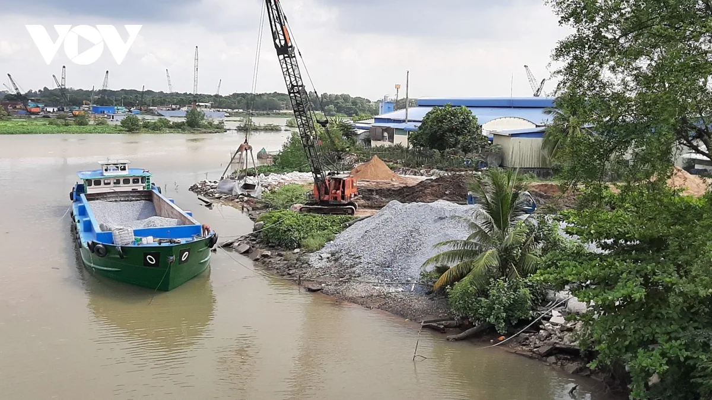
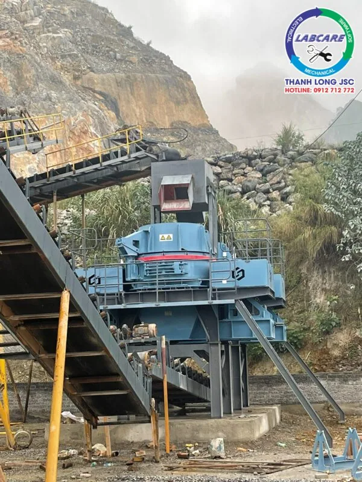
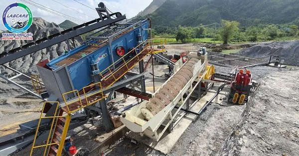

Giá cát xây dựng tăng chóng mặt, nguyên nhân do đâu?
Giá cát xây dựng tại Bà Rịa đang tăng cao, Tại Sao????
Trong những năm gần đây thị trường ngành xây dựng biến động dữ dội. Đặc biệt là về vật liệu xây dựng trong đó nổi bật nhất là cát xây dựng. Làm sao để bình ổn cán cân cung – cầu của cát xây dựng? Câu trả lời nằm ở các cơ quan chức năng có thẩm quyền. Tuy nhiên, giải pháp lâu dài là tìm kiếm vật liệu thay thế cát tự nhiên trong tương lai. Vậy, chúng ta cùng nhau tìm hiểu lý do nhé.
Theo Bộ Xây Dựng, dự báo trong quý III năm 2023 giá cát xây dựng sẽ tiếp tục tăng do nhu cầu rất lớn về vật liệu xây dựng. Hiện tại các dự án giao thông trọng điểm đồng loạt khởi công chính vì vậy nguồn cát xây dựng ngày càng bị thiếu hụt.
Thực trạng về giá cát xây dựng trong những năm gần đây
Trong 6 tháng đầu năm 2023 giá cát tăng bình quân 1,52%/ tháng vì nhu cầu sử dụng cát tăng lên. Đặc biệt, giá cát tăng mạnh từ các tỉnh phía Nam, bình quân 3,4%/tháng.
Các chuyên gia trong lĩnh vực vật liệu lên tiếng nói rằng do yếu tố nguồn khai thác và nhu cầu sử dụng cát tại các tỉnh phía Nam lớn hơn rất nhiều so với miền Bắc và miền Trung. Việc gia tăng giá cát xây dựng có thể lý giải là do nhu cầu sử dụng ngày càng cao. Vật liệu xây dựng cho các công trình giao thông cho cả nước và đặc biệt là dự án cao tốc Bắc – Nam.
Dự báo giá cát xây dựng vẫn tiếp tục tăng trong quý III/2023 vì lý do các dự án trọng điểm đang được khởi công từ đầu năm. Trong đó có một số dự án trọng điểm như: 10 dự án thành phần thuộc Dự án xây dựng cao tốc Bắc Nam giai đoạn 2021-2025 từ đoạn Hà Tĩnh đến Khánh Hòa. Thêm nữa, Vành đai 4 thành phố Hà Nội, Vành đai 3 thành phố Hồ Chí Minh, cao tốc Biên Hòa -Vũng tàu, cao tốc Khánh Hòa – Buôn Ma Thuật, cao tốc Châu Đốc – Cần Thơ – Sóc Trăng.
Nguyên nhân dẫn đến tình trạng khan hiếm cát xây dựng.
Một trong những nguyên nhân chính khiến giá cát xây dựng tăng cao chính là do lệch pha cung và cầu. Lượng cát khai thác chỉ đáp ứng được 50% nhu cầu của người sử dụng.

Nguyên nhân thứ hai là do đầu cơ tích trữ. Một số doanh nghiệp, chủ bến bãi nắm được nguồn cung cấp cát xây dựng nhưng không bán ra. Biết được tình trạng cát thiếu hụt, các doanh nghiệp đợi thời cơ cát tăng cao, tạo ra cơn sốt và thu lợi nhuận về cho mình.
Ngoài ra còn có nguyên nhân xuất phát từ các chủ đầu tư dự án. Các chủ đầu tư dự án chưa cân đối được nguồn cung cho các công trình khi nguồn nguyên liệu khan hiếm. Việc sử dụng cát nghiền, cát nhân tạo làm vật liệu thay thế còn hạn chế do sự bảo thủ trong định kiến.
Giải pháp đưa ra nhằm giải quyết tình trạng thiếu hụt cát trên thị trường hiện nay.
Nguồn cung cấp cát tự nhiên ngày càng khan hiếm thì cát nhân tạo lên ngôi là chuyện dễ hiểu. Chính vì vậy, sản xuất cát nhân tạo nhằm thay thế cát tự nhiên đang được các chủ mỏ quan tâm biết tới.
Cát nhân tạo được sản xuất như thế nào?
Cát nhân tạo được sản xuất bằng cách giảm kích thước của các vật liệu lớn hơn thành các hạt có kích thước nhỏ hơn, giống như cát tự nhiên. Cát nhân tạo dùng trong xây dựng có thể được sản xuất theo kích thước hạt nhất định mà người mua chọn. Trong khi cát tự nhiên có thể là hỗn hợp của các hạt thô và mịn. Cát nhân tạo có cường độ thoi dẹt cao hơn trong quá trình nghiền. Các hạt có nhiều góc cạnh có xu hướng làm tăng độ nhão của bê tông.

Nguồn cung cấp cát nhân tạo chỉ bị giới hạn bởi năng lực của những người làm ra nó. Khi nguồn cung cấp cát tự nhiên đang thiếu hụt hoặc khó kiếm về mặt hậu cần thì cát nhân tạo là một giải pháp tốt hơn.
Cát nhân tạo được tạo ra nhằm giải quyết vấn đề thiếu hụt cát xây dựng phục vụ cho công trình xây dựng.
Quy trình sản xuất cát nhân tạo từ đá 0-40 như thế nào?
Một dây chuyền sản xuất cát nhân tạo từ đá 0-40 như sau: Đá 0-40 được đưa vào máy nghiền cát VSI để nghiền nhỏ vật liệu xuống. Sau đó được băng tải đưa qua sàng rung phân loại để phân loại các sản phẩm có kích thước khác nhau. Hạt có kích thước 0-5 thì được đưa ra máy rửa cát nhằm loại bỏ đi tạp chất còn sót lại. Nguyên liệu sau khi rửa theo băng tải và đi ra ngoài. Hạt có kích thước lớn hơn 0-5 thì quay lại máy nghiền cát VSI để tiếp tục xử lý. Dây chuyền nghiền cát nhân tạo được xoay vòng theo vòng tuần hoàn.
Các thiết bị được dùng trong dây chuyền nghiền cát nhân tạo
Máy nghiền côn cát – Máy nghiền VSI

Máy nghiền cát VSI hoạt động dựa trên lực ly tâm và va đập tốc độ cao, sử dụng cơ chế “đá va đá” hoặc “đá va đe” để nghiền vật liệu, tạo ra sản phẩm cát nhân tạo đồng đều, đạt tiêu chuẩn xây dựng.
Máy rửa cát trục vít

Máy rửa cát trục vít được sử dụng trong dây chuyền nghiền cát nhân tạo. Nhằm mục đích loại bỏ bụi bẩn còn sót trong quá trình nghiền nâng cao chất lượng sản phẩm.
Máy rửa cát hoạt động theo nguyên lý động cơ truyền động qua hộp giảm tốc. Với trục đầu ra được lắp ghép với trục xoắn của máy rửa. Máy rửa vít xoắn được lắp đặt theo một góc nghiêng. Cát nghiền được khuấy, chà xát để rơi bụi bẩn trong thùng chứa. Được đưa lên trên dọc theo trục xoắn nhờ tác động của các cánh xoắn.
Các yếu tố ảnh hưởng đến sản lượng cát nhân tạo dùng làm cát xây dựng trong tương lai
Vật liệu
Độ cứng, độ nhớt và đổ ẩm của vật liệu có thể ảnh hưởng đến sản lượng cát nhân tạo. Độ cứng lớn hơn, độ nhớt cao hơn và hàm lượng nước cao hơn, sản lượng ít hơn.
Vận hành và Bảo trì.
Trong quá trình vận hành, các thiết bị cần được bảo trì, bảo dưỡng thường xuyên. Nhằm cải thiện được tỷ lệ sản xuất cát của các thiết bị. Thiết bị hao mòn sẽ làm cho tốc độ hoạt động của máy nghiền bị giảm và làm giảm hiệu suất thành phẩm .
Chất lượng
Đầu tư thiết bị tốt, thiết bị chất lượng thì không chỉ cải thiện được tốc độ tạo ra sản phẩm mà còn tiết kiệm được năng lượng và bảo vệ được môi trường. Nhằm đạt được sản lượng mong muốn của chủ đầu tư, giúp chủ đầu tư tiết kiệm được điện năng, thiết kiệm chi phí.
Dự án có thiết kế bản vẽ rõ ràng.
Việc đầu tư dây chuyền máy nghiền cát xây dựng đạt chuẩn cần có thiết kế bản sẽ rõ ràng, rành mạch. Nhà đầu tư cần có yêu cầu đơn vị cung cấp máy đưa ra được các bản vẽ, bản sơ đồ lắp đặt, bố trí thiết bị.
Chủ đầu tư phải hiểu rõ được tình hình sản xuất thực tế của mỏ. Tìm hiểu kỹ lưỡng trước khi đầu tư thiết bị
Dù là đầu tư dây chuyền máy nghiền cũ hay dây chuyền máy nghiền cát mới thì các số liệu bắt buộc cần phải có để tính toán một dây chuyền máy nghiền hoàn chỉnh bao gồm:
+ Vật liệu cần nghiền là gì (đá Granite, bazan, vôi, sỏi sông, sỏi cuội, cát kết, Ryolit..)
+ Kích thước lớn nhất của đá cho vào thiết bị là bao nhiêu?
+ Tỷ trọng của vật liệu đưa vào nghiền.
+ Công suất đầu vào hoặc đầu ra của dây chuyền nghiền đá.
+ Số lượng các sản phẩm đầu ra, kích thước cụ thể (tính theo đơn vị milimet).
Qua bài viết này, để được tư vấn đầu tư dây chuyền nghiền cát nhân tạo đạt chuẩn. Tiết kiệm được chi phí đầu tư. Hãy liên hệ với chúng tôi để được tư vấn và báo giá trọn bộ thiết bị.
Hotline: 0912 – 712 – 772